Inside the vLLM
agentic tuning loop
Control flow at 23f7081: baseline Job, optional resource release, version-guarded recipe tool, candidate Pods, and comparison
Study setup → baseline → candidate loop

CONF
.US
Each profile-driven study starts from a fresh baseline process
objective + TP ceiling
benchmark Job policy
reuse completed downloader
apply Deployment + Service
wait for rollout
render candidate template
Provisioning sequence
Copy model-access secret; apply model and results PVCs; run downloader only if incomplete. Apply baseline Deployment and Service. If the Deployment existed, issue oc rollout restart; then wait for rollout status.
Study inputs
The profile supplies model, GPU resources, TP ceiling, base vLLM args, selected workload, and optimization.objective (throughput or latency). Candidate manifests derive from the same rendered container spec.
cleanup_after_benchmark can delete its Deployment and Service before the loop (enabled in the Janus profile). The model-cache and results PVCs persist.CONF
.US
The baseline Job completes before the first model iteration
baseline = tools.dispatch("run_benchmark", policy)
runner = AgenticRunner(baseline_summary=baseline.output)
while not done and not paused and iteration < cap:
iteration += 1
response = messages.create(
system=SYSTEM_PROMPT,
tools=TOOL_DEFINITIONS,
messages=messages
)
if response.stop_reason == "tool_use":
dispatch_each_tool_block(response)
elif response.stop_reason == "end_turn":
append_text_and_continue_prompt()
State and context
The controller checks /v1/models, runs the baseline GuideLLM Job, optionally deletes baseline compute, and injects metric rows into the first user message.
Recipe fetching is a model-requested tool call inside this loop, not a controller startup prefetch.
AgentState now includes paused. A failed delete_vllm_pod stops the loop; resume() first verifies the Pod and Service are absent.
Each tool call records iteration, inputs, and up to 4,000 output characters in decision_log.
done warning with five iterations remaining.CONF
.US
Tool dispatch maps endpoints to cluster Services
| Tool calls | Execution site | Addressing rule / data returned |
|---|---|---|
run_command | Disposable in-cluster curl Pod | HTTP diagnostics or cache inspection; profile mode mounts the model-cache PVC read-only at /models. |
fetch_vllm_logs | OcExecutor / SSH | Omit pod_name for baseline; pass candidate name for experiment logs. |
run_benchmark | In-cluster GuideLLM Job | Default target is baseline Service. Candidate endpoint must match an active Pod; it maps to that Pod's Service. |
create_vllm_pod, delete_vllm_pod | PodManager → oc | Create/delete both Pod and private Service. The returned endpoint is http://<pod-name>:8000. |
search_vllm_prs | Local SQLite FTS5 | Query merged PR metadata using optional architecture and hardware facets. |
fetch_vllm_recipe | Controller HTTP fetch | Match model recipe; default model, hardware and runtime version come from study context. Incompatible recipe args are withheld. |
oc logs job/…. JSON and CSV are written to the cluster results PVC; controller-local JSON comparison tools are not part of this path.CONF
.US
The controller measures baseline before starting Claude
- 0 · Verify
ClusterCurlExecutorcalls baseline/v1/models. The served ID must equal the configured benchmark model.- 1 · Job
run_benchmark(profile=args.profiles[0])starts GuideLLM against the baseline Service using profile benchmark concurrency and duration.- 2 · Result
- Job writes JSON/CSV to the results PVC.
ClusterBenchmarkRunner._summarizeextracts completed-request, latency, and throughput rows from Job logs. - 3 · Context
- The summary is passed as
baseline_summaryand inserted into the agent's first message. The agent is instructed not to rerun baseline. - 4 · Release
- If
cleanup_after_benchmarkis true, delete baseline Deployment and Service. A deletion error stops the controller before candidate trials.
CONF
.US
Each candidate gets a Pod and an exact-match private Service
append
vllm_argsreject prefix-cache flags
selector: unique experiment ID
900 s timeout
5 s interval
logs → candidate Pod
compare matching rows
delete Service
pause if either fails
Candidate address
create_vllm_pod returns pod_name and http://<pod-name>:8000. active_pods tracks args and endpoint; get_cluster_target verifies ownership before a Job is launched.
Failure paths
Startup failures collect Pod JSON, events, and tail logs, then remove untracked resources. A failed delete retains the active record and pauses tuning; resume requires human cleanup and a Pod/Service absence check.
CONF
.US
The scored test is an OpenShift Job at configured load
guidellm run
--backend kind=openai_http,
target=http://<service>:8000,
model=<served-id>
--tokenizer kind=huggingface_auto,
model=<served-id>
--data kind=synthetic_text,
prompt_tokens=16384,
output_tokens=1024
--profile '{"kind":"concurrent",
"streams":[1,50]}'
--constraint kind=max_duration,seconds=30
--output kind=json,path=/results/<job>.json
--output kind=csv,path=/results/<job>.csv
Study benchmark policy
The example profile selects long_context_16k_1k, concurrency [1,50], and 30 seconds. The Job reads ISL/OSL from the chosen workload profile and concurrency/duration from environment.benchmark.
Job execution
backoffLimit=0; completion TTL 24 hours. A non-root container has a read-only root filesystem, ephemeral /tmp, and results PVC mounted at /results.
Return path
oc wait → oc logs → parse concurrent rows from Job text. Failed completion returns Job logs as the error; the JSON path is not passed to the agent.
CONF
.US
Current comparison uses Job console rows, not local JSON
What the agent receives
_summarize extracts rows from “Run Summary Info,” “Request Latency Statistics,” and “Server Throughput Statistics.” The initial message contains baseline rows; every experiment returns candidate rows.
Rows at concurrency 1 must be compared with concurrency 1, and 50 with 50. The system prompt requires this matching and a 2% improvement threshold.
What code enforces
_handle_run_benchmark rejects differing concurrency and duration. AgentTools.dispatch rejects endpoints outside active_pods.
The 2% decision and “10 consecutive non-improving experiments” remain agent judgments. compare_benchmarks and detect_regression still exist for local JSON, but the in-cluster Job path does not call them.
CONF
.US
Recipe retrieval, PR search, and objective-guided selection
Recipe tool in the model/tool loop
The system prompt directs the agent to call fetch_vllm_recipe first. AgentTools.dispatch fills model ID, hardware, and runtime vLLM version; the controller fetches the catalog and closest recipe.
If model.min_vllm_version exceeds the runtime, the fetcher withholds recipe-only args, variants, and features and returns a warning.
optimization.objective changes candidate priority: throughput emphasizes compatible MTP/speculative decoding and batching; latency emphasizes TTFT, ITL, scheduling, and prefill.
PR index and recipe briefing
search_vllm_prs(query, architecture, hardware) searches the local SQLite FTS5 database. The manifest records source, schema, generation time, and 4,266 merged PR documents.
recipe_fetcher.py matches exact/normalized/token-overlap model IDs and formats base args, hardware overrides, variants, and speculative decoding as a tool result for the agent.
CONF
.US
MLflow records Jobs; cleanup failure pauses the runner
Active runtime behavior
With --mlflow-uri, each completed Job logs model/target/concurrency tags, ISL/OSL params, throughput and TTFT/ITL percentiles, plus guidellm.log. MLflow failure is caught and does not invalidate the benchmark.
max_iterations caps model calls. Cleanup failure sets paused; resume() verifies the Pod and Service are gone before continuing with preserved conversation state.
Committed, but not wired into this run path
BenchmarkSpec and WarmupSpec define a locked scored workload and unscored warmup (default concurrency 8 for 15 seconds). CLI warmup options are parsed, but no current caller builds the spec or launches a warmup Job.
Reporter.generate writes Markdown and JSON. The controller's pre-run baseline summary is not stored in AgentState.baseline_results; structured report metrics from Job rows may therefore be incomplete.
CONF
.US